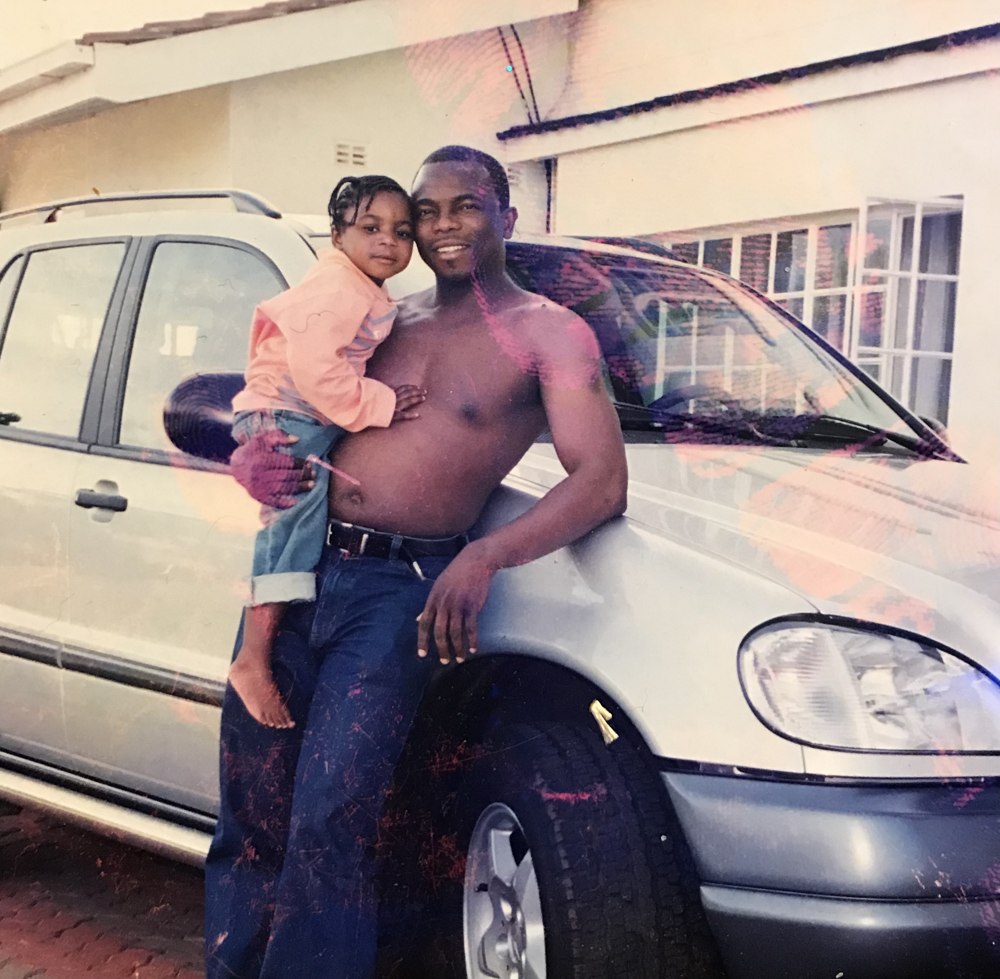
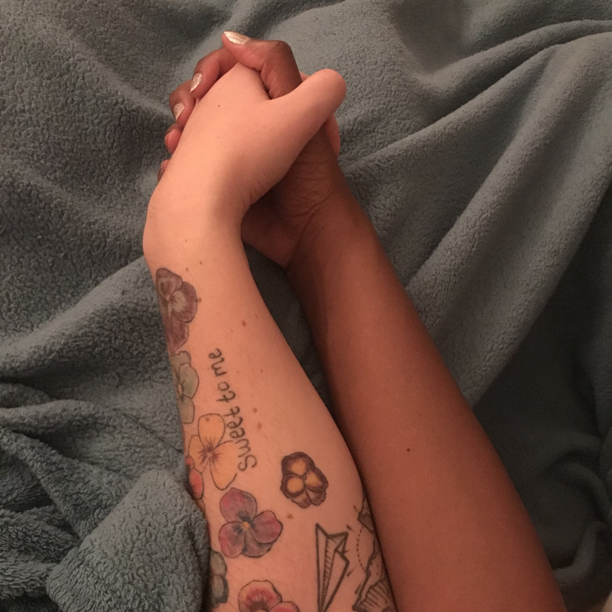
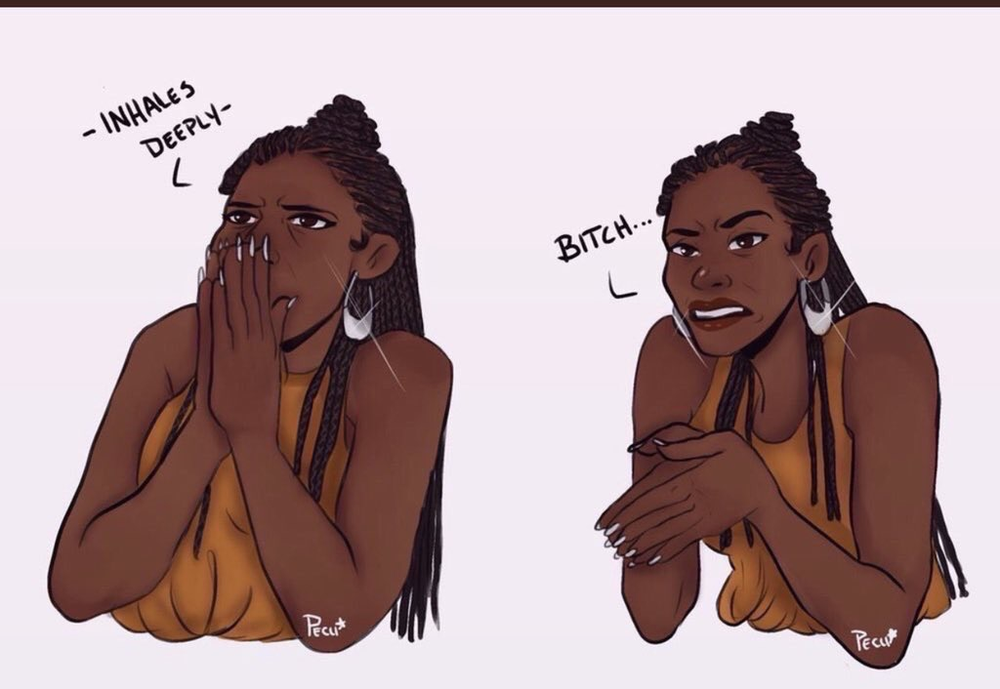

Me and my best friend, my father, back in the day
I came out to my father in December. We were sat at breakfast together and I blurted it out as we cleared
away the dishes. As we were talking about the memories he had of his youth. My father was incredibly
supportive and really made me feel safe and comfortable in that moment. I literally was able to take a
breath of relief. I am a privileged queer woman, in that my queerness is easier to process for the average
person. Simply because it’s not as visible, through my gender presentation. After shaving my hair off I have
become acutely more aware of my gender presentation. Rather, of gender presentation as a whole. I have
started to ponder what my understanding of being a woman is. So far I have come to realize that it is
whatever you want it to be. I say this because even though I fully believe that gender is a social
construct, I have come to feel a hundred percent conviction of that belief. Whereas in the past I would say
it and not think twice about how I perpetuated gender norms. Today, I am constantly questioning myself and
my previous habits. I will call them habits as they were learned actions and not so much actively chosen.
If I am to think back upon my childhood, I recall feeling discomfort especially when it came to topics of
sexuality and gender. I didn’t understand how to articulate what the physical repulsion to the norms by
which I was taught to follow. Even today, I acknowledge that I am protected by the safety net of “passing”
as straight and cis-gendered. I have never had my womanhood questioned and that is why it is so easy for me
to claim I know what it is to be a woman. Most people will list things such as: ability to bear children,
getting a period, having a vagina, having breasts etc. As I come more into myself and grapple with my
foundational values, I believe that these are all arbitrary notions of womanhood. Bodies are just that,
bodies. They don’t actually determine your worth or the way you will treat others. Side note – It’s like
when I came to the underwhelming revelation that just because I find someone attractive, doesn’t actually
mean being intimate with them will be satisfying. I may not know exactly what it means to be a woman, but I
know that there is no way possible that it rests on bodily attributes.
I have been adding a new motto to my ways of living and that is receiving people as they are. In a
multifaceted way, be it how they look or how they treat me. I have been living on this earth for far too
long to try and raise people to the expectations (based off of weird norms) I have in my head. Living by
this motto is helping me to be more comfortable with acknowledging the more disgusting sides of myself which
are judgmental and entitled. I don’t want to continue half heartedly accepting people that are different to
me. I want to fully accept, especially the things I do not understand. At the end of the day that is what I
ask of others when it comes to their reception of me. So it is imperative that I extend them that same
grace.
Just to clarify, I am trying to make the statement that even though so many of us are trying to be allies to
our fellow LGBT+ folks, we need to be real about the actual thoughts we have in our head. We need to be real
about confronting all the queerphobic/heteronormative actions and thoughts we have, it is at that point that
we can say that we are truly on the road to allyship.
Soul Ties
The first time I realized the strength of the soul ties between the two was during a rehearsal. One of the
actors had not prepared their lines and he was furious, he went on a rage and she simply called out his name
Ben. A wave of calm washed over him as the sound of her voice touched his ears. He took a moment, a breath
and calmly told us to take five. I had never seen a love so strong and beautiful until I met these two. I
wouldn’t say they completed each other, they were already whole on their own, but they molded together to
create something greater than themselves. You could feel it when they walked in the room and it made you
want to believe in love and soul mates. They were the essence of comfort found through love.

Cynthia within the loving embrace of a Philia soulmate
The Neighbor
Every morning I give myself an hour to get ready for the day. I like to
take my time moisturizing my skin after I shower and thinking about my outfit for the day. It is a true
ritual and testament to how much effort I put into looking feeling good. I am a firm believer of the
superpowers of a dope outfit. Every minute counts and I can sort of section out a minute in my mind. I give
myself exactly 3 mins to get my coat on and pack my lunch into a paper bag before I hurry out the door and
allocate 60 secs to locking the three locks on the doors. Safety is key.
As I scrambled out of the tiny doorway one morning, a handsome man came into view, on the phone in front of
my neighbors door. He had dreadlocks, short and curved inwards like a little bob. He looked me in the eyes
and smiled. “Looking good today.” I felt myself begin to blush and I thanked him and hurried away. The next
morning, I saw him again and he complimented me again. There’s something about the validation of a young
Black man when you’re not as overtly feminine that makes you feel powerful and accepted. I hope to keep
seeing this handsome man because his smile truly holds a warm and sincerity that touches my soul.
The Invisibility of Black Women in Predominantly White Institutions

Me every couple minutes during my time at my PWI
I would not say that I have been the most popular person or deemed the most attractive in a room. However, I have always known with conviction that there were people who would be attracted to me. When I came to my predominantly white institution (PWI) this believe was absolutely shaken. Nobody would give me a second glance or the time of day. I began to reflect upon this further than on a romantic level to a general level. It made me realize the lengths of pretty privilege and how they tie into someone’s value in a community. The only time I was noticed was when topics related to blackness arose. Otherwise, I would be deemed intimidating and unapproachable on sight. This drove me insane as I consider myself to be a friendly person who tries to acknowledge and talk to most people on our campus. I started to dive into a whole of self-doubt and frustration, until I started speaking to other Black women at PWIs. The social structure simply leaves no space for Black women to flourish unless they are athletes, provide some sort of motherly connection to people or provide entertainment to them. It is not that I wanted the attention of white people, but I just wanted to feel that my presence was at the very least acknowledged on my campus.
All throughout this time white women would tell me that I was so beautiful while expressing how they felt ugly and not wanted. Simultaneously receiving attention for their looks. This would infuriate me, it felt like a slap in the face and a disregard for their benefitting from their pretty privileged based off of a white standard. White women telling Black women that they “don’t understand why you haven’t hooked up with anyone because you’re so pretty” Is incredibly frustrating. It highlighted to me how they are able to gain from white supremacy and still feel like they could be on our side all in the name of “womanhood”. Failing to acknowledge their complicity in society pulling the cloak of invisibility over us. For the most part I would say this does not bother me anymore because I know my worth… but to be honest it still gets to me from time to time.
A little bit about the author
Cynthia Lanor is many things, a young charismatic Leo hailing from South Africa. They enjoys creating
critical thought pieces that explore race, sexuality and social politics. Often found at a happy hour with
bougie cocktails on a Friday night or on the dancefloor of queer friendly club. In 2020 Cynthia, just like
the rest of the world, went through a series of changes. From a relationship breakup to internal shifts
about how they navigate the world. These are just a few snippets into her mind at the time.